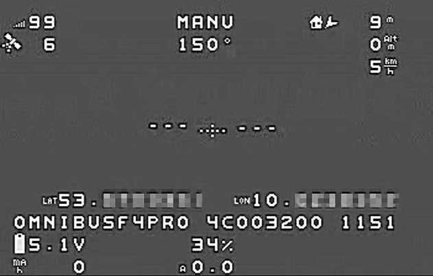

OSD¶
{kind=link}
OSD functionality is provided for on-board OSDs using MAX7456-type chips and external MSP based OSDs, including DJI Goggles, and goggles using DisplayPort. This enables overlay of FC data on the video. Once enabled, it uses various panel items that can individually be set active and positioned on the screen using respective parameters. It allows to setup multiple screen layouts and switch between those using a spare RC channel. It also allows the display and change of sets of parameters using stick gestures or RC transmitters, in certain cases.
Note
Being an integral library of ArduPilot firmware, the OSD code provides the prerequisites to be redirected to various backends other than MAX-type chipsets, including testing on SITL setups without actual autopilot- or video-hardware needed.
Parameters¶
To enable the OSD overlay on MAX7456-type chips, set parameter: OSD_TYPE to 1, reboot and reload parameters.
This exposes the whole OSD parameter group.
To set a RC channel for screen switching, use parameter OSD_CHAN.
To set the units used to display, use parameter OSD_UNITS:
0= Metric (meters,kilometers,meters/sec,kilometers/hour,degs in C)1= Imperial (feet, miles, feet/sec, miles/hour, degs in F)2= ArduPilot Native (meters,kilometers,meters/sec,degs in C)3= Aviation (feet, nautical mile, feet/min, knots, degs in C)
To set vertical and horizontal display offset (space at top and left side of screen), use parameters OSD_H_OFFSET, OSD_V_OFFSET.
Several options can be set using OSD_OPTIONS (bitmask selection):
bit0 = Enable use of compact number+decimal point fonts
bit1 = Invert wind direction indicator (to point to the direction its blowing from instead of toward)
bit2 = Invert horizon roll direction
Several font sets are included and can be changed during runtime (and those who can build the software can customize or add additional font sets….see libraries/AP_OSD/fonts/README.md)
0= Clarity (default). A clearly visible large font1= Clarity Medium. Good visibility, less dominant than clarity default2= Betaflight. bf- / inav-osd default style3= Bold. A bolder version of Betaflight4= Digital. 80’s LED clock radio style
Note
In firmware 4.1 and above, onboard font options might be limited on 1 MB boards to save memory for other features. However, font upload from SD card is supported. This allows the user to choose from up to 10 font files (named “font0.bin” - “font9.bin”) placed in the root directory of your SD card. Additionally, this allows the user to easily add individualized and/or customized language charsets for the onboard OSD without the need to compile individual firmware. Runtime font changing using the parameter OSD_FONT is unaffected.
MAVftp might be a convenient option to upload files to your SD card without having to physically remove it from your autopilot. Font files, font editor, and utilities to convert to a .bin file from .mcm are here. If downloading the editor or a font’s .bin file from this site, be sure to use the Download` button, rather than selecting ``Raw, and then right click saving, as you would the .mcm or .py files.
To enable the use of external MSP OSDs or DisplayPort systems see:
Screens and screen switching¶
For multiple screen layouts, each parameter’s “OSD” part is trailed by a number, starting with “1” for the screen number for which the parameter applies.
OSDn_<ITEM>_<PARAMETER>- n represents the screen number, ITEM the displayed data item, and PARAMETER, the enable and positions parameters for this display item. OSD settings default to allowing up to 4 screens available, each optionally enabled. Displayed data items can be shown on one screen and not on others by setting its ENABLE parameter for that screen.Set parameters
OSDn_CHAN_MINandOSDn_CHAN_MAXare used to adjust RC channel pwm limits to use for switching to a respective screen. Be careful not to have overlapping PWM ranges for two screens.
There are different switch-method options to meet individual RC systems switch layout requirements. These can be set by parameter: OSD_SW_METHOD. The options are:
0 = switches to next screen if the set RC channel’s (OSD_CHAN) value is changed
1 = directly selects a screen based on the set pwm limits for each respective screen. RC channel value must change for new pwm value to be recognized.
2 = toggles screens on a low to high transition of set RC channel. keeps toggling to next screen every 1s while channel value is kept high
Panel items¶
Each OSD panel item uses a set of three variables to be set:
OSDn_<ITEM>EN- activates the respective item when set to 1.OSDn_<ITEM>_XandOSDn_<ITEM>_Yset the horizontal and vertical position of the item, starting withX = 0andY = 0in the upper left corner of your screen.
Note
The typical MAXChip based OSD screen has a visible matrix of 30 horizontal x 13 vertical chars in NTSC standard, while PAL standard has 16 vertical chars. The OSD code enables auto-detection of NTSC vs. PAL to match input signal properties.
Note
ArduPilot calculates an sensor-less airspeed estimate that is used if no sensor is present or fails. ARSPD_TYPE must be set to zero in order to display this value as the airspeed item, if no sensor is present.
Callsign panel¶
This panel allows to display your amateur radio callsign (or any other individual character string) on your onboard OSD screen. It will read the character string from a file named “callsign.txt” placed in the root of your SD card. Mind that the default ardupilot charsets require to use capital letters for correct display. Using MAVftp is a convenient option to upload the file to your SD card without having to physically remove it from your flightcontroller.
Note
You will find this feature in firmware 4.1 and later
User Programmable Warnings¶
Several user defined warnings can be set which will flash the respective osd panel item when warning level is reached or exceeded
OSD_W_BATVOLT - Blinks battery voltage panel if less than this value. 0-100V with up tenth volt precision
OSD_W_RSSI - Blinks rssi panel if less than this integet percentage value. 0-99%
OSD_W_NSAT - Blinks #Sat panel if less than this number. 0-30
Testing OSD with SITL¶
OSD functionality can be tested without autopilot- or video-hardware using a Software In The Loop (SITL) simulator setup. Follow the SITL-Instructions to setup a simulation environment. Run the simulator on current source code.
A graphical OSD simulation in a separate window can be opened by adding the following option to sim_vehicle.py:
--osd
The simulated OSD can now be set and configured via parameters.
Tip
To see all available options type:
./sim_vehicle.py -help
List of OSD Panels¶
Panel Name |
Description |
|---|---|
ALTITUDE |
Altitude above Home |
BAT_VOLT |
Primary Battery Voltage |
RSSI |
RC Received Signal Strength |
CURRENT |
Primary Battery Current |
BATUSED |
Consumed Battery Capacity |
SATS |
Number of GPS Satellites |
FLTMODE |
Flight Mode |
MESSAGE |
GCS Messages |
GSPEED |
Ground Speed |
HORIZON |
Artificial Horizon |
HOME |
Distance and Direction to Home |
HEADING |
Magnetic Heading |
THROTTLE |
Throttle Percentage |
COMPASS |
Compass Rose |
WIND |
Wind Speed and Direction |
ASPEED |
System Airspeed |
VSPEED |
Climb Rate |
ESCTEMP |
ESC Temperature |
ESCRPM |
ESC RPM |
ESCAMPS |
ESC Current |
GPSLAT |
GPS Latitude |
GPSLONG |
GPS Longitude |
ROLL |
Roll degrees |
PITCH |
Pitch degrees |
TEMP |
Baro Temperature |
HDOP |
GPS HDOP |
WAYPOINT |
Next Waypoint Distance and Direction |
XTRACK |
Cross Track Error |
DIST |
Total Distance Traveled |
STATS |
Statistics Summary |
FLTIME |
Elasped Time in Flight |
CLIMBEFF |
Climb Efficiency |
EFF |
Efficiency |
BTEMP |
2nd Baro Temperature |
ATEMP |
Airspeed Temperature |
BAT2_VLT |
Second Battery Voltage |
BAT2USED |
Second Battery Consumption |
ASPD2 |
Airspeed sensor 2 |
ASPD1 |
Airspeed sensor 1 |
CLK |
Local Time of Day |
SIDEBARS |
Speed/Alt Sidebars |
CRSSHAIR |
Artificial Horizon Crosshair |
HOMEDIST |
Distance to HOME (MSPOSD only) |
HOMEDIR |
Direction to HOME (MSPOSD only) |
POWER |
Power (MSPOSD only) |
CELLVOLT |
Calculated Cell Voltage for Primary Battery (MSPOSD only) |
BATTBAR |
Battery Health Bar (MSPOSD only) |
ARMING |
Arming Status (MSPOSD only) |
PLUSCODE |
Open Location Code |
CALLSIGN |
Callsign from SD card callsign.txt |
CURRENT2 |
2nd Battery Current |
VTX_PWR |
Video TX power setting |
TER_HGT |
Altitude above Terrain |
AVGCELLV |
Calculated Cell Voltage for Primary Battery |
RESTVOLT |
Calculated Resting Voltage for Primary Battery |
FENCE |
EENCE enabled status |
RNGF |
Rangefinder Distance |
ACRVOLT |
Calculated Cell Resting Voltage for Primary Battery |
LINK_Q |
RC Link Quality |